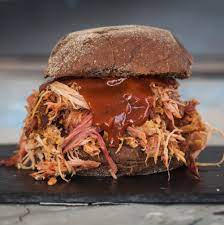

Pulled Pork

Description
Pulled pork. It's pork, it's pulled, it's delicious.
Ingredients
- 2 tps smoked paprika
- 2 tsp ground cumin
- 2 tsp pepper
- 2 tsp brown sugar
- 1 tsp salt
- 2 m edium mugfuls of cider
- boneless should of pork (about 2.5kg)
- a mugful of a good smoky barbecue sauce
- soft white rolls
- coleslaw
Steps
- Mix together 2 tsp each smoked paprika, ground cumin, pepper, and brown sugar, plus 1 tsp salt. Rub over the 2.5kg boneless shoulder of pork.
- Put the pork in a big casserole dish, skin-side up, and pour in 2 medium mugfuls of cider.
- Cover with a lid and cook in the oven at 150C/130C fan/gas 2 for anywhere between 4 and 8 hrs until falling apart. Check every few hours in case it gets dry – if it does, add another mugful of cider.
- Take it out of the oven and put the meat in a big dish, leaving the liquid in the casserole.
- Cut the skin off, then shred the meat using two forks. Ditch any fatty bits, and skim any excess fat off the surface of the sauce.
- Add a mugful of a good smoky BBQ sauce to the casserole, mix it in, then ladle some into a bowl for dipping.
- Put the pulled pork back in the casserole with the juices so it stays moist. Season to taste. Can be made one day ahead.
- Serve in soft white rolls with coleslaw and the bowl of juices on the side for ‘French dipping’ the sandwich while you’re eating.
Back to the beginning